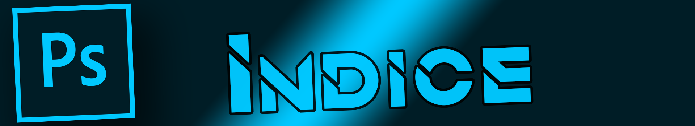

 Prólogo ¿Por qué Photoshop? Primeros Conceptos Herramientas Opciones de Fusión Lecciones Insertar un texto básico sobre un fondo Aplicar degradados a textos y a imágenes Parámetros y utilidades de la herramienta goma Aplicar sombras Aplicar filtros y como configurar sus parámetros Curvar Textos Cambiar las perspectivas de una imagen Proyectos Hacer un fondo de pantalla a partir de una imagen Hacer un banner para YouTube/Twitch Final Conclusión